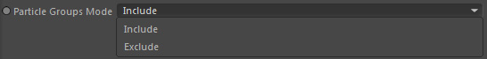
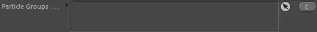
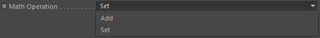
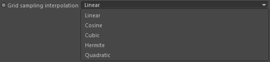

Parameters
Parameters
Particle Groups Mode

Defines if the 'Particle Groups' list includes or excludes its entries.
Particle Groups

Define the particle groups you would like to store the grid data in.
Source Channel

Drop here the source grid channel to read/sample in order to transfer that value on the defined particles.
Particle Property
Define which particle property should store the sampled grid channel value.
If your Source Channel is a scalar channel the property should optimally be a scalar property as well.
If it's not a scalar property (but a vector property for example) the operator will try to convert the sample value to a vector.
The same happens in any other cases.
Duration
Defines when (temporally) and how long this node operates.
Math Operation

Which mathematical method should be used to update the existing particle property value with the sample value.
Add
The sample value is added to the existing property value.
Set
The sample value overwrites the existing property value.
Grid sampling interpolation

Defines how to interpolate grid values to retrieve the sample value at the particle position.
Linear
Fast & reliable but not very accurate
Cosine
Fast but also not very accurate and quite special
Cubic
Good quality but slower
Hermite
Good and sharp quality (without overshooting) but slow
Quadratic
Quadratic interpolation
Good and accurate quality but slow